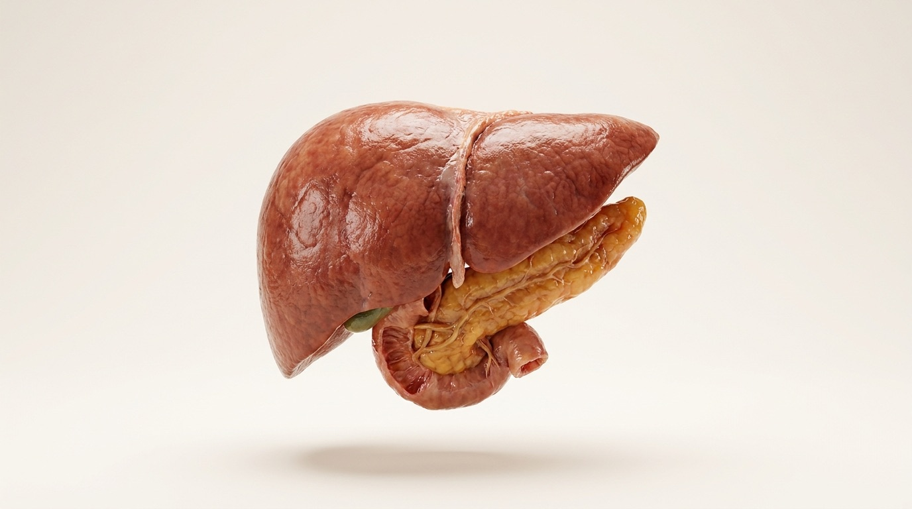
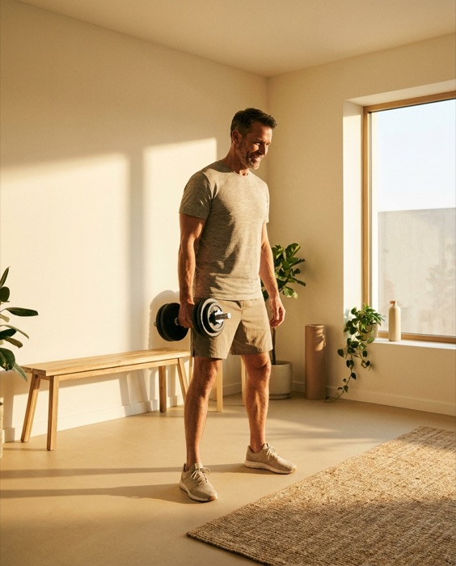

Reduce your risk. Rebuild your performance. Extend your peakspan. Every test and protocol in the program exists for one of these.
These four account for most preventable death and decline. Each one builds silently for a decade or more before symptoms. That decade is our window.
60+ cardiovascular markers: ApoB, Lp(a), particle counts, hs-CRP. Your physical checks maybe four of them. The difference is where risk hides.
Functional screening, inflammatory load, and metabolic analysis combined. The goal is a body that's hard to grow cancer in, and findings caught early enough to act on.

Insulin resistance, visceral fat, lipid dysfunction. It starts as afternoon crashes and stubborn weight years before it ever earns a diagnosis.
Homocysteine, omega-3 index, ApoE status, inflammation, sleep, glucose control. Brain decline has measurable inputs, and most of them are moveable.
Risk reduction pays off over decades. Performance pays off this quarter. We grade and rebuild eight systems you use every day.

“Longevity” is really three different numbers, and they’re easy to confuse. Lifespan is how long you’re alive. Healthspan is how long you stay free of disease. Peakspan is how long you stay at full strength: sharp, strong, and fully yourself. Most medicine works on the first. We build the third.
For most people, peakspan ends 20 or more years before life does. That gap is decades of being alive without being at your best. Closing it is the whole point.